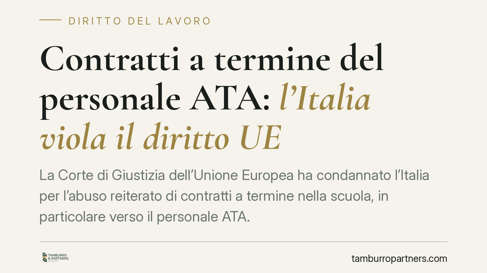

Contratti a termine del personale ATA: l'Italia viola il diritto UE
La Corte di Giustizia dell'Unione Europea ha condannato l'Italia per l'abuso reiterato di contratti a termine nella scuola, in particolare verso il personale ATA. La pronuncia accerta la violazione della direttiva 1999/70/CE e impone correttivi normativi. Per migliaia di lavoratori precari si aprono possibili spazi di tutela risarcitoria e di stabilizzazione.

Il fatto
La Corte di Giustizia dell'Unione Europea ha ritenuto che l'Italia non abbia predisposto misure efficaci contro l'utilizzo abusivo di una successione di contratti a tempo determinato nel comparto scolastico. La pronuncia riguarda in modo specifico il personale ATA (amministrativo, tecnico e ausiliario), cioè quel complesso di figure che assicurano il funzionamento quotidiano delle scuole: assistenti amministrativi, assistenti tecnici, collaboratori scolastici.
Il nodo è noto da anni. Numerosi lavoratori vengono impiegati con contratti a termine rinnovati di anno in anno, per coprire posti in realtà stabilmente vacanti. La Corte considera questo schema incompatibile con il diritto dell'Unione quando manca un adeguato apparato sanzionatorio e di prevenzione.
Inquadramento normativo
Il parametro è la direttiva 1999/70/CE, che recepisce l'accordo quadro europeo sul lavoro a tempo determinato. La clausola 5 dell'accordo impone agli Stati membri di adottare almeno una tra queste misure: ragioni oggettive che giustifichino il rinnovo, una durata massima complessiva dei rapporti a termine, un numero massimo di rinnovi.
Lo scopo è preciso: evitare che il contratto a termine, nato come strumento flessibile, si trasformi in una forma stabile di precariato mascherato. Quando lo Stato impiega in modo continuativo lo stesso lavoratore per esigenze permanenti, viene meno la "ragione oggettiva" che legittima il termine.
La Corte ha già affrontato il tema in passato per il personale docente (caso *Mascolo* e successivi). La nuova pronuncia estende e rafforza il principio rispetto al personale ATA, settore finora meno tutelato dagli interventi di stabilizzazione. Sotto osservazione anche i requisiti previsti per i concorsi destinati a immettere in ruolo questi lavoratori, ritenuti non idonei a sanare l'abuso.
Implicazioni pratiche
Per il lavoratore ATA con una storia di contratti a termine reiterati la pronuncia ha effetti concreti.
In primo luogo, rafforza le possibilità di ottenere un risarcimento del danno per l'abusiva reiterazione. Nel pubblico impiego la conversione del rapporto a tempo indeterminato è preclusa dalla regola del concorso pubblico (art. 97 Costituzione); resta però la via risarcitoria, che la giurisprudenza interna ha già riconosciuto e che la sentenza UE consolida.
In secondo luogo, mette pressione sul legislatore italiano perché riveda le procedure di stabilizzazione e i requisiti di accesso ai concorsi. Eventuali modifiche normative potrebbero ampliare la platea dei beneficiari o correggere criteri oggi penalizzanti.
Va chiarito un punto, per evitare aspettative errate: la sentenza non produce automaticamente l'assunzione a tempo indeterminato né un indennizzo immediato. Apre spazi di tutela che vanno fatti valere caso per caso, ricostruendo la successione dei contratti, i periodi di servizio e la natura delle esigenze coperte.
Cosa fare in concreto
- Recuperate la documentazione contrattuale completa: tutti i contratti a termine, le proroghe, gli ordini di servizio e i certificati di servizio. La prova della reiterazione è il fondamento di ogni richiesta.
- Verificate la natura del posto coperto: se l'incarico riguardava un posto vacante e disponibile in organico, l'esigenza è strutturale, non temporanea. È l'elemento che qualifica l'abuso.
- Calcolate la durata complessiva del servizio a termine: sommate i periodi per valutare il superamento delle soglie e l'entità del danno potenziale.
- Valutate i termini di prescrizione: i diritti risarcitori sono soggetti a termini decadenziali e prescrizionali. Un ritardo può precludere la tutela. Consigliamo di non attendere passivamente eventuali interventi normativi.
- Richiedete una valutazione preliminare della posizione prima di aderire a iniziative collettive o procedure concorsuali, per scegliere la strada più coerente con la propria situazione.
Considerazioni finali
La pronuncia conferma una linea europea ormai consolidata: il precariato pubblico cronico non è compatibile con il diritto dell'Unione. Per il personale ATA si tratta di un riconoscimento atteso, che però va tradotto in azioni individuali mirate. Le risposte normative e giurisprudenziali italiane si svilupperanno nei prossimi mesi: monitorare gli sviluppi sarà essenziale per chi intende far valere i propri diritti nei tempi corretti.
---
*Contributo informativo a cura di Tamburro & Partners - Avv. Giuseppe Tamburro. Non costituisce parere legale.*
Ogni storia di lavoro ha i suoi tempi.
Se gestisci HR e vuoi un confronto su contenzioso, ispezioni o licenziamenti, scrivi allo studio. Ti rispondiamo entro un giorno lavorativo.